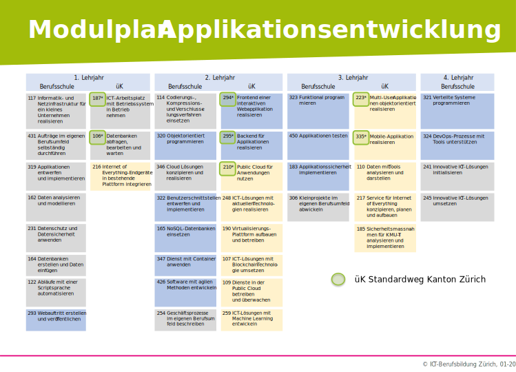

VORAUSSETZUNGEN
- Abgeschlossene Volksschule oberste Schulstufe (Sek A)
- Interesse und gute Leistungen in Mathematik
- Freude an der Schaffung von Lösungen
- Freude am Experimentieren
- Freude an exakter Denk- und Arbeitsweise
- Fähigkeit im Team zu arbeiten
- Gute Kommunikationsfähigkeit und Dienstleistungsverständnis
- Bereitschaft, sich ständig weiterzubilden
BERUFSANFORDERUNGEN
- Sehr gutes logisch-abstraktes Denkvermögen
- Sinn für theoretische Vorgänge und Abläufe
- Interesse und gute Leistungen in naturwissenschaftlichen Fächern
- Interesse und gute Leistungen der Sprachen Deutsch und Englisch
MODULPLAN APPLIKATIONSENTWICKLUNG
Am Lernort Berufsfachschule werden 960 Lektionen Informatik in 24 Modulen unterrichtet und am Lernort ÜK sind es 280 Lektionen in 7 Modulen.
